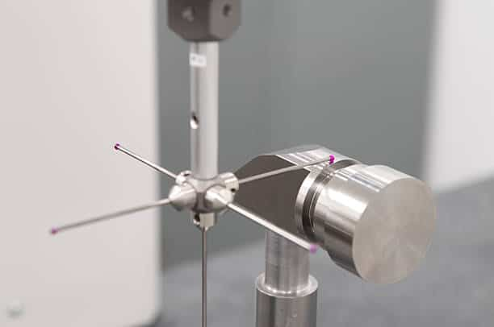

In the world of modern manufacturing, precision isn’t just a goal—it’s a requirement. Whether you are designing aerospace components, medical devices, or high-performance automotive parts, understanding CNC machining tolerances is critical to the success of your project.
However, aiming for the highest possible precision without considering the practical implications can lead to skyrocketing costs and manufacturing delays. This comprehensive guide breaks down everything you need to know about CNC machining tolerances to optimize your designs for both performance and budget.
What Are CNC Machining Tolerances?
In CNC (Computer Numerical Control) machining, a tolerance is the acceptable amount of variation in a part's dimensions. No manufacturing process can achieve 100% absolute perfection every single time; minor variations occur due to tool wear, material expansion, and machine vibrations.
A tolerance specifies a range (e.g., 10.00 mm ± 0.05 mm), meaning the final part can measure anywhere between 9.95 mm and 10.05 mm and still be considered functional and acceptable.

Common Types of CNC Machining Tolerances
When creating technical drawings or CAD models, engineers utilize several types of tolerance callouts depending on the part's function:
- Standard Tolerances: If a designer doesn't specify a tolerance, the CNC shop will apply their standard (or default) tolerance, usually around ± 0.125 mm (± 0.005 inches).
- Bilateral Tolerances: The variation is allowed in both directions (positive and negative) from the nominal size. For example: 25.00 mm ± 0.10 mm.
- Unilateral Tolerances: Variation is permitted in only one direction. This is common when a part must fit inside another (e.g., a shaft that can be smaller but never larger than the target hole: 15.00 mm +0.00 / -0.05 mm).
- Limit Tolerances: Instead of a plus/minus callout, the drawing shows the maximum and minimum allowable dimensions (e.g., 24.95 mm - 25.05 mm).
- GD&T (Geometric Dimensioning and Tolerancing): A more advanced system that controls not just size, but geometric characteristics like flatness, concentricity, and perpendicularity.
Standard CNC Tolerances vs. Tight Tolerances
Most reputable CNC machining services can easily achieve standard tolerances. However, when parts require extreme precision, "tight tolerances" come into play.
| Tolerance Level | Typical Range (Metric) | Typical Range (Imperial) | Common Applications |
|---|---|---|---|
| Standard Tolerance | ± 0.125 mm | ± 0.005'' | Bracketry, enclosures, general structural parts |
| Medium Precision | ± 0.05 mm | ± 0.002'' | Mating components, aligned slide ways |
| Tight/High Precision | ± 0.01 mm to ± 0.025 mm | ± 0.0005'' to ± 0.001'' | Aerospace valves, medical implants, engine internals |
Manufacturing Note: Achieving tolerances tighter than ± 0.01 mm usually requires specialized equipment, climate-controlled environments, and secondary operations like grinding or honing, which significantly increase production time and cost.
Key Factors That Influence Machining Tolerances
Choosing the right tolerance isn't just about what you want; it’s about what the material and machine can do. Several factors dictate the limits of precision:
1. Material Choice
Different materials behave differently under the stress of a cutting tool.
- Metals: Aluminum 6061, brass, and mild steel are highly machinable and hold tight tolerances exceptionally well. Harder metals like Titanium or Inconel cause severe tool wear, making precision harder to maintain.
- Plastics: Plastics (like POM/Delrin, Nylon, or PEEK) tend to deflect during cutting and absorb moisture, causing them to expand or contract. Maintaining tight tolerances on plastics requires specialized workholding and cutting strategies.
2. Cutting Tool Wear
As CNC machines cut through raw stock, the cutting tools naturally wear down. Even a microscopic deflection or reduction in tool radius will alter the final dimension of the part. High-precision jobs require frequent tool inspection and calibration.
3. Part Complexity and Geometry
Deep holes, thin walls, and long, slender features are prone to vibration and deflection (bending) during machining. If a design has a wall thickness of less than 1 mm, maintaining a tight tolerance becomes incredibly difficult.
4. Thermal Expansion
Friction during machining generates immense heat. Metals expand when heated and contract when cooled. If a part is machined at a high temperature and measured later at room temperature, its dimensions will change.
The Golden Rule: The Cost of Tight Tolerances
In CNC machining, there is an exponential relationship between tolerance tightness and manufacturing cost.

Why do tighter tolerances cost more?
- Slower Machining Speeds: The machine must run at lower feeds and speeds to minimize vibration and heat.
- Increased Setup Time: Specialized jigs, fixtures, and calibration tools are required.
- Higher Scrap Rates: The margin for error is so small that more parts end up failing Quality Assurance (QA).
- Advanced Inspection: Checking high-precision parts requires expensive metrology equipment like CMMs (Coordinate Measuring Machines) in temperature-controlled rooms.
Best Practices for Engineers and Designers
To optimize your CNC machining projects for both cost and functionality, keep these design tips in mind:
- Only Specify Tight Tolerances Where Necessary: Reserve tight tolerances (± 0.02 mm or tighter) exclusively for critical mating surfaces, bearing seats, or high-pressure seals. For non-critical features, stick to standard tolerances.
- Utilize Standard Hole Sizes: Design holes based on standard drill bit sizes (e.g., 3 mm, 6 mm, or fractional inch sizes). This eliminates the need for expensive custom endmills or reamers.
- Consider Material Stability: If your part requires extreme precision, choose a dimensionally stable material like Aluminum 6061-T6 or Stainless Steel 303.
- Consult Your CNC Manufacturing Partner Early: Before finalizing your design, talk to your CNC machine shop. A quick Design for Manufacturability (DFM) analysis can save you thousands of dollars by identifying unnecessary tolerances.
Conclusion
Mastering CNC machining tolerances is a balancing act between design intent, material capabilities, and economic reality. By understanding how tolerances affect production speed and cost, you can create smarter designs that are easier to manufacture, highly functional, and cost-effective.
Are you looking for a reliable manufacturing partner for your next high-precision project? Contact a professional today to get an expert DFM review and a rapid quote for your CNC machined parts.
[Learn More About CNC Machining Tolerances]